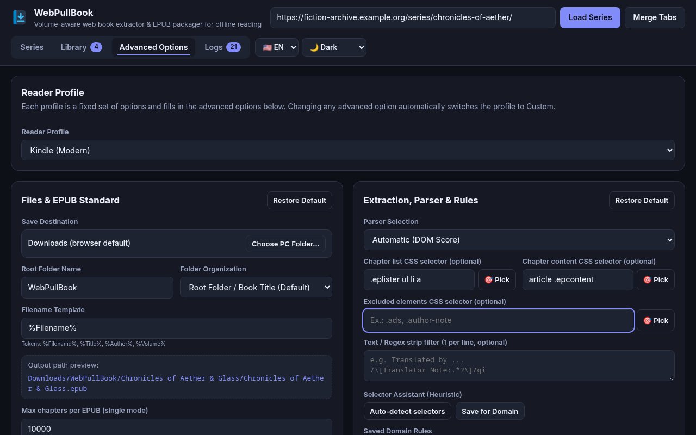

1. Baixe a Release
Baixe o pacote da versão mais recente em GitHub Releases e extraia a pasta no seu computador.
WebPullBook é uma extensão de navegador open source (Web-to-EPUB) escrita em JavaScript nativo e sem dependências de execução. Permite extrair web novels, light novels, fanfics, artigos, documentações e abas abertas em arquivos EPUB 2, EPUB 3, HTML, Markdown e TXT organizados por volume para Kindle, Kobo, Calibre e leitura local.




O WebPullBook não exige etapa de compilação nem instalador externo. Siga estes três passos:
Baixe o pacote da versão mais recente em GitHub Releases e extraia a pasta no seu computador.
chrome://extensions/, ative o Modo do desenvolvedor, clique em Carregar sem compactação e selecione a pasta extraída.about:debugging#/runtime/this-firefox, clique em Carregar extensão temporária... e selecione o arquivo manifest.json (ou o próprio .zip).Abra a página de índice ou capítulo de uma obra, clique no ícone do WebPullBook na barra do navegador, escolha o Perfil de Leitor (como Kindle ou Kobo) e clique em Empacotar EPUB.
Toda a extração, limpeza de HTML, processamento de imagens e compressão ZIP ocorre localmente no navegador.
Captura o DOM vivo direto da aba aberta para reaproveitar o conteúdo já carregado. Em sites que dependem de renderização via JavaScript, utiliza uma única aba auxiliar reutilizável com pausa automática em desafios anti-bot.
Combina adaptadores de DOM com um extrator heurístico que identifica listas de capítulos, blocos de texto, links de "Próximo Capítulo" e divisões de volume — além da ferramenta visual 🎯 Apontar para layouts personalizados.
Predefinições ajustam o padrão EPUB (EPUB 2 para o Send to Kindle da Amazon ou EPUB 3 para Calibre USB e Kobo), notas de rodapé pop-up, resolução de imagens (1200px ou 1080px) e tipografia em uma única escolha.
Pré-visualize e edite o texto de capítulos antes de exportar, mescle capítulos ou abas abertas (Juntar Abas) e utilize a capa padrão gerada automaticamente com a logo do WebPullBook e o título da obra quando a página não possuir capa original.
Identifica formatos de imagem por magic bytes, ignora páginas HTML de erro retornadas como imagem, refaz requisições sem credenciais em falhas de CDN, preserva GIF/APNG/WebP animados e deduplica imagens repetidas por hash de conteúdo.
O Modo Seguro adapta o intervalo entre requisições à latência do servidor e respeita o cabeçalho Retry-After. Capítulos baixados ficam em cache local no IndexedDB por 7 dias, e a Biblioteca acompanha capítulos novos nas obras salvas.
O WebPullBook exporta em quatro formatos de acordo com o dispositivo ou fluxo de leitura.
| Formato | Extensão | Estrutura & Recursos | Uso Típico |
|---|---|---|---|
| EPUB 3 | .epub |
Container OCF, nav.xhtml + toc.ncx, metadados de série belongs-to-collection, notas de rodapé pop-up (aside epub:type="footnote"), capa, Página de Informações e Página Final. |
Kobo, Calibre (transferência USB KFX/AZW3), Apple Books, Thorium Reader e leitores EPUB mobile. |
| EPUB 2 | .epub |
Capítulos em XHTML 1.1, toc.ncx clássico + Sumário HTML no início do livro, conversão de WebP/AVIF para JPEG e redimensionamento a 1200px/1080px. |
Amazon Send to Kindle (conversor na nuvem por e-mail/web/app) e e-readers antigos. |
| HTML Único Offline | .html |
Documento HTML autônomo para leitura offline com capa embutida, sumário navegável e CSS responsivo. | Leitura direta no navegador do computador ou celular. |
| Markdown & Texto Puro | .md / .txt |
Títulos formatados, parágrafos, quebras de cena e cabeçalho de metadados sem menus ou elementos da página original. | Obsidian, Logseq, editores de texto e arquivos locais em texto simples. |
Respostas objetivas sobre compatibilidade com leitores, privacidade e limitações.
Para o serviço Send to Kindle da Amazon (e-mail, web ou app), selecione Kindle (Antigo), que gera EPUB 2 clássico com imagens JPEG a 1200px para evitar rejeições na conversão da Amazon. Para Calibre (USB / KFX / AZW3), selecione Kindle (Moderno) para usar EPUB 3 e notas pop-up. Para Kobo, Tolino ou PocketBook, escolha Kobo e Leitores Digitais (EPUB 3 com otimização a 1080px preservando cores).
A extensão de navegador WebPullBook não possui servidor próprio, telemetria ou análise de uso. Todo o processamento de HTML, sanitização XHTML, conversão de imagens e empacotamento ZIP/EPUB ocorre localmente no seu navegador, e as requisições de rede são enviadas diretamente apenas aos sites de origem que você escolher extrair. Separadamente, este site público de documentação utiliza o GoatCounter para contagem agregada de visitas sem cookies e sem rastreamento pessoal. Veja a Política de Privacidade para detalhes.
O WebPullBook extrai texto em DOM HTML padrão acessível na sessão do navegador (Central Novel, Royal Road, Novel Mania, Scribble Hub, NovelBin verificados de ponta a ponta, além de suporte heurístico genérico e modo SPA). Limitações mapeadas em docs/COMPATIBILITY.md: Plataformas com DRM proprietário, Capítulos em <canvas> ou imagens embaralhadas, Paywalls fechados sem acesso na sessão, Barreiras anti-bot / CAPTCHA estritas.